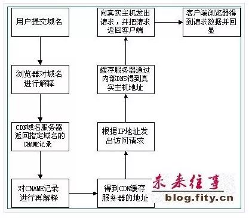

一篇文章弄懂CDN技术原理
概述
Internet的高速发展，给人们的工作和生活带来了极大的便利，对Internet的服务品质和访问速度要求越来越高，虽然带宽不断增加，用户数量也在不断增加，受Web服务器的负荷和传输距离等因数的影响，响应速度慢还是经常抱怨和困扰。
解决方案就是在网络传输上利用缓存技术使得Web服务数据流能就近访问，是优化网络数据传输非常有效的技术，从而获得高速的体验和品质保证。
网络缓存技术，其目的就是减少网络中冗余数据的重复传输，使之最小化，将广域传输转为本地或就近访问。互联网上传递的内容，大部分为重复的Web/FTP数据，Cache服务器及应用Caching技术的网络设备，可大大优化数据链路性能，消除数据峰值访问造成的结点设备阻塞。
Cache服务器具有缓存功能，所以大部分网页对象（Web page object），如html, htm, PHP等页面文件，gif,tif, png, bmp等图片文件，以及其他格式的文件，在有效期（TTL）内，对于重复的访问，不必从原始网站重新传送文件实体，只需通过简单的认证（Freshness Validation）- 传送几十字节的Header，即可将本地的副本直接传送给访问者。
由于缓存服务器通常部署在靠近用户端，所以能获得近似局域网的响应速度，并有效减少广域带宽的消耗。据统计，Internet上超过80%的用户重复访问20%的信息资源，给缓存技术的应用提供了先决的条件。
缓存服务器的体系结构与Web服务器不同，缓存服务器能比Web服务器获得更高的性能，缓存服务器不仅能提高响应速度，节约带宽，对于加速Web服务器，有效减轻源服务器的负荷是非常有效的。
高速缓存服务器（Cache Server）是软硬件高度集成的专业功能服务器，主要做高速缓存加速服务，一般部署在网络边缘。根据加速对象不同，分为客户端加速和服务器加速，客户端加速Cache部署在网络出口处，把常访问的内容缓存在本地，提高响应速度和节约带宽；服务器加速，Cache部署在服务器前端，作为Web服务器的前置机，提高Web服务器的性能，加速访问速度。如果多台Cache加速服务器且分布在不同地域，需要通过有效地机制管理Cache网络，引导用户就近访问，全局负载均衡流量，这就是CDN内容传输网络的基本思想。
什么是CDN内容分发网络？
CDN的全称是Content Delivery Network，即内容分发网络。其目的是通过在现有的Internet中增加一层新的网络架构，将网站的内容发布到最接近用户的网络”边缘”，使用户可以就近取得所需的内容，解决Internet网络拥塞状况，提高用户访问网站的响应速度。从技术上全面解决由于网络带宽小、用户访问量大、网点分布不均等原因，解决用户访问网站的响应速度慢的根本原因。
狭义地讲，内容分发布网络(CDN)是一种新型的网络构建方式，它是为能在传统的IP网发布宽带丰富媒体而特别优化的网络覆盖层；而从广义的角度，CDN代表了一种基于质量与秩序的网络服务模式。
简单地说，内容发布网络(CDN)是一个经策略性部署的整体系统，包括分布式存储、负载均衡、网络请求的重定向和内容管理４个要件，而内容管理和全局的网络流量管理(Traffic Management)是CDN的核心所在。通过用户就近性和服务器负载的判断，CDN确保内容以一种极为高效的方式为用户的请求提供服务。
总的来说，内容服务基于缓存服务器，也称作代理缓存(Surrogate)，它位于网络的边缘，距用户仅有”一跳”(Single Hop)之遥。同时，代理缓存是内容提供商源服务器（通常位于CDN服务提供商的数据中心）的一个透明镜像。这样的架构使得CDN服务提供商能够代表他们客户，即内容供应商，向最终用户提供尽可能好的体验，而这些用户是不能容忍请求响应时间有任何延迟的。
据统计，采用CDN技术，能处理整个网站页面的70%～95％的内容访问量，减轻服务器的压力，提升了网站的性能和可扩展性。
与目前现有的内容发布模式相比较，CDN强调了网络在内容发布中的重要性。通过引入主动的内容管理层的和全局负载均衡，CDN从根本上区别于传统的内容发布模式。在传统的内容发布模式中，内容的发布由ICP的应用服务器完成，而网络只表现为一个透明的数据传输通道，这种透明性表现在网络的质量保证仅仅停留在数据包的层面，而不能根据内容对象的不同区分服务质量。
此外，由于IP网的”尽力而为”的特性使得其质量保证是依靠在用户和应用服务器之间端到端地提供充分的、远大于实际所需的带宽通量来实现的。在这样的内容发布模式下，不仅大量宝贵的骨干带宽被占用，同时ICP的应用服务器的负载也变得非常重，而且不可预计。
当发生一些热点事件和出现浪涌流量时，会产生局部热点效应，从而使应用服务器过载退出服务。这种基于中心的应用服务器的内容发布模式的另外一个缺陷在于个性化服务的缺失和对宽带服务价值链的扭曲，内容提供商承担了他们不该干也干不好的内容发布服务。
纵观整个宽带服务的价值链，内容提供商和用户位于整个价值链的两端，中间依靠网络服务提供商将其串接起来。随着互联网工业的成熟和商业模式的变革，在这条价值链上的角色越来越多也越来越细分。
比如内容／应用的运营商、托管服务提供商、骨干网络服务提供商、接入服务提供商等等。在这一条价值链上的每一个角色都要分工合作、各司其职才能为客户提供良好的服务，从而带来多赢的局面。从内容与网络的结合模式上看，内容的发布已经走过了ICP的内容（应用）服务器和IDC这两个阶段。IDC的热潮也催生了托管服务提供商这一角色。但是，IDC并不能解决内容的有效发布问题。内容位于网络的中心并不能解决骨干带宽的占用和建立IP网络上的流量秩序。因此将内容推到网络的边缘，为用户提供就近性的边缘服务，从而保证服务的质量和整个网络上的访问秩序就成了一种显而易见的选择。而这就是内容发布网(CDN)服务模式。CDN的建立解决了困扰内容运营商的内容”集中与分散”的两难选择。无疑对于构建良好的互联网价值链是有价值的，也是不可或缺的。
CDN新应用和客户
目前的CDN服务主要应用于证券、金融保险、ISP、ICP、网上交易、门户网站、媒体站点、大中型公司、网络教学等领域。另外在行业专网、互联网中都可以用到，甚至可以对局域网进行网络优化。利用CDN，这些网站无需投资昂贵的各类服务器、设立分站点，特别是流媒体信息的广泛应用、远程教学课件等消耗带宽资源多的媒体信息，应用CDN网络，把内容复制到网络的最边缘，使内容请求点和交付点之间的距离缩至最小，从而促进Web站点性能的提高，具有重要的意义。
CDN网络的建设主要有企业建设的CDN网络，为企业服务；IDC的CDN网络，主要服务于IDC和增值服务；网络运营上主建的CDN网络，主要提供内容推送服务；CDN网络服务商，专门建设的CDN用于做服务，用户通过与CDN机构进行合作，CDN负责信息传递工作，保证信息正常传输，维护传送网络，而网站只需要内容维护，不再需要考虑流量问题。
CDN能够为网络的快速、安全、稳定、可扩展等方面提供保障。
IDC建立CDN网络，IDC运营商一般需要有分部各地的多个IDC中心，服务对象是托管在IDC中心的客户，利用现有的网络资源，投资较少，容易建设。例如某IDC全国有10个机房，加入IDC的CDN网络，托管在一个节点的Web服务器，相当于有了10个镜像服务器，就近供客户访问。
宽带城域网，域内网络速度很快，出城带宽一般就会瓶颈，为了体现城域网的高速体验，解决方案就是将Internet网上内容高速缓存到本地，将Cache部署在城域网各POP点上，这样形成高效有序的网络，用户仅一跳就能访问大部分的内容，这也是一种加速所有网站CDN的应用。
CDN的工作原理
在描述CDN的实现原理，让我们先看传统的未加缓存服务的访问过程，以便了解CDN缓存访问方式与未加缓存访问方式的差别：
由上图可见，用户访问未使用CDN缓存网站的过程为：
1、用户向浏览器提供要访问的域名；
2、浏览器调用域名解析函数库对域名进行解析，以得到此域名对应的IP地址；
3、浏览器使用所得到的IP地址，域名的服务主机发出数据访问请求；
4、浏览器根据域名主机返回的数据显示网页的内容。
通过以上四个步骤，浏览器完成从用户处接收用户要访问的域名到从域名服务主机处获取数据的整个过程。CDN网络是在用户和服务器之间增加Cache层，如何将用户的请求引导到Cache上获得源服务器的数据，主要是通过接管DNS实现，下面让我们看看访问使用CDN缓存后的网站的过程：

通过上图，我们可以了解到，使用了CDN缓存后的网站的访问过程变为：
1)、用户向浏览器提供要访问的域名；
2)、浏览器调用域名解析库对域名进行解析，由于CDN对域名解析过程进行了调整，所以解析函数库一般得到的是该域名对应的CNAME记录，为了得到实际IP地址，浏览器需要再次对获得的CNAME域名进行解析以得到实际的IP地址；在此过程中，使用的全局负载均衡DNS解析，如根据地理位置信息解析对应的IP地址，使得用户能就近访问。
3)、此次解析得到CDN缓存服务器的IP地址，浏览器在得到实际的IP地址以后，向缓存服务器发出访问请求；
4)、缓存服务器根据浏览器提供的要访问的域名，通过Cache内部专用DNS解析得到此域名的实际IP地址，再由缓存服务器向此实际IP地址提交访问请求；
5)、缓存服务器从实际IP地址得得到内容以后，一方面在本地进行保存，以备以后使用，二方面把获取的数据返回给客户端，完成数据服务过程；
6)、客户端得到由缓存服务器返回的数据以后显示出来并完成整个浏览的数据请求过程。
通过以上的分析我们可以得到，为了实现既要对普通用户透明(即加入缓存以后用户客户端无需进行任何设置，直接使用被加速网站原有的域名即可访问)，又要在为指定的网站提供加速服务的同时降低对ICP的影响，只要修改整个访问过程中的域名解析部分，以实现透明的加速服务，下面是CDN网络实现的具体操作过程。
1)、作为ICP，只需要把域名解释权交给CDN运营商，其他方面不需要进行任何的修改；操作时，ICP修改自己域名的解析记录，一般用cname方式指向CDN网络Cache服务器的地址。
2)、作为CDN运营商，首先需要为ICP的域名提供公开的解析，为了实现sortlist，一般是把ICP的域名解释结果指向一个CNAME记录；
3)、当需要进行sorlist时，CDN运营商可以利用DNS对CNAME指向的域名解析过程进行特殊处理，使DNS服务器在接收到客户端请求时可以根据客户端的IP地址，返回相同域名的不同IP地址；
4)、由于从cname获得的IP地址，并且带有hostname信息，请求到达Cache之后，Cache必须知道源服务器的IP地址，所以在CDN运营商内部维护一个内部DNS服务器，用于解释用户所访问的域名的真实IP地址；
5)、在维护内部DNS服务器时，还需要维护一台授权服务器，控制哪些域名可以进行缓存，而哪些又不进行缓存，以免发生开放代理的情况。
CDN的技术手段
实现CDN的主要技术手段是高速缓存、镜像服务器。可工作于DNS解析或HTTP重定向两种方式，通过Cache服务器，或异地的镜像站点完成内容的传送与同步更新。
DNS方式用户位置判断准确率大于85%，HTTP方式准确率为99%以上；一般情况下，各Cache服务器群的用户访问流入数据量与Cache服务器到原始网站取内容的数据量之比在2：1到3：1之间，即分担50%到70%的到原始网站重复访问数据量（主要是图片，流媒体文件等内容）；对于镜像，除数据同步的流量，其余均在本地完成，不访问原始服务器。
镜像站点（Mirror Site）服务器是我们经常可以看到的，它让内容直截了当地进行分布，适用于静态和准动态的数据同步。但是购买和维护新服务器的费用较高，另外还必须在各个地区设置镜像服务器，配备专业技术人员进行管理与维护。大型网站在随时更新各地服务器的同时，对带宽的需求也会显著增加，因此一般的互联网公司不会建立太多的镜像服务器。
高速缓存手段的成本较低，适用于静态内容。Internet的统计表明，超过80%的用户经常访问的是20%的网站的内容，在这个规律下，缓存服务器可以处理大部分客户的静态请求，而原始的WWW服务器只需处理约20%左右的非缓存请求和动态请求，于是大大加快了客户请求的响应时间，并降低了原始WWW服务器的负载。根据美国IDC公司的调查，作为CDN的一项重要指标 —— 缓存的市场正在以每年近100%的速度增长，全球的营业额在2004年将达到45亿美元。网络流媒体的发展还将剌激这个市场的需求。
CDN的网络架构
CDN网络架构主要由两大部分，分为中心和边缘两部分，中心指CDN网管中心和DNS重定向解析中心，负责全局负载均衡，设备系统安装在管理中心机房，边缘主要指异地节点，CDN分发的载体，主要由Cache和负载均衡器等组成。
当用户访问加入CDN服务的网站时，域名解析请求将最终交给全局负载均衡DNS进行处理。全局负载均衡DNS通过一组预先定义好的策略，将当时最接近用户的节点地址提供给用户，使用户能够得到快速的服务。同时，它还与分布在世界各地的所有CDNC节点保持通信，搜集各节点的通信状态，确保不将用户的请求分配到不可用的CDN节点上，实际上是通过DNS做全局负载均衡。
对于普通的Internet用户来讲，每个CDN节点就相当于一个放置在它周围的WEB。通过全局负载均衡DNS的控制，用户的请求被透明地指向离他最近的节点，节点中CDN服务器会像网站的原始服务器一样，响应用户的请求。由于它离用户更近，因而响应时间必然更快。
每个CDN节点由两部分组成：负载均衡设备和高速缓存服务器
负载均衡设备负责每个节点中各个Cache的负载均衡，保证节点的工作效率；同时，负载均衡设备还负责收集节点与周围环境的信息，保持与全局负载DNS的通信，实现整个系统的负载均衡。
高速缓存服务器（Cache）负责存储客户网站的大量信息，就像一个靠近用户的网站服务器一样响应本地用户的访问请求。
CDN的管理系统是整个系统能够正常运转的保证。它不仅能对系统中的各个子系统和设备进行实时监控，对各种故障产生相应的告警，还可以实时监测到系统中总的流量和各节点的流量，并保存在系统的数据库中，使网管人员能够方便地进行进一步分析。通过完善的网管系统，用户可以对系统配置进行修改。
理论上，最简单的CDN网络有一个负责全局负载均衡的DNS和各节点一台Cache，即可运行。DNS支持根据用户源IP地址解析不同的IP，实现就近访问。为了保证高可用性等，需要监视各节点的流量、健康状况等。一个节点的单台Cache承载数量不够时，才需要多台Cache，多台Cache同时工作，才需要负载均衡器，使Cache群协同工作。
原文：https://my.oschina.net/vshcxl/blog/811601
（推荐阅读）
（完）
长按关注，每天java一下，成就架构师